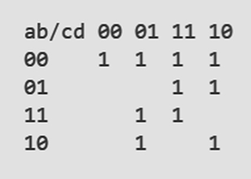
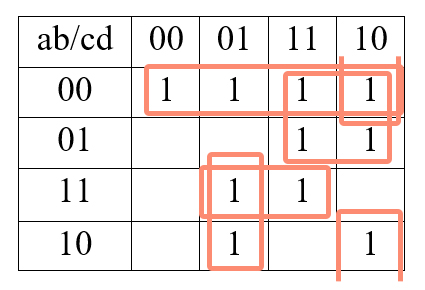
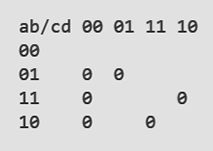
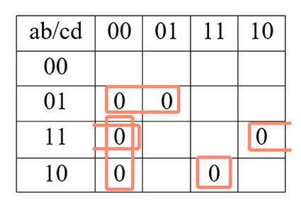
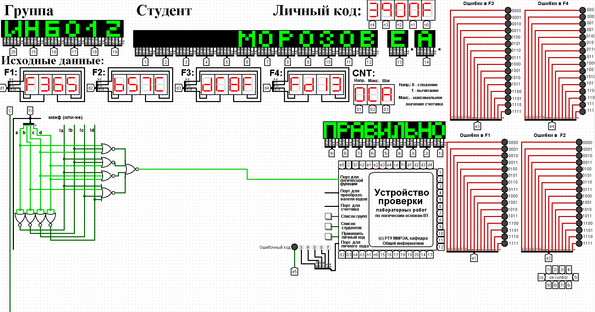

Логическая функция от четырех переменных задана в 16-теричной векторной форме. Восстановить таблицу истинности. Минимизировать логическую функцию при помощи карт Карно и получить формулы МДНФ и МКНФ в общем базисе. Перевести МДНФ и МКНФ в базисы «И-НЕ» и «ИЛИ-НЕ» (каждую минимальную форму в два базиса). Построить комбинационные схемы для приведенных к базисам формул МДНФ и МКНФ в лабораторном комплексе, используя только логические элементы, входящие в конкретный базис. Протестировать работу схем и убедиться в их правильности. Подготовить отчет о проделанной работе и защитить ее.
Персональный вариант:
После восстановления таблицы истинности будет получена таблица 1.
Построим МДНФ заданной функции. Для этого воспользуемся методом карт Карно. Разместим единичные значения функции на карте Карно, предназначенной для минимизации функции от четырех переменных (рисунок 1). Напоминаем, что местоположение значения функции на карте в каждом конкретном случае определяется координатами, которые представляют собой комбинацию значений переменных.
Пустые клетки карты на рисунке 1 содержат нулевые значения функции, которые при построении МДНФ в целях повышения наглядности можно на карту не наносить.
Теперь необходимо выделить интервалы, на которых функция сохраняет свое единичное значение. Размер интервалов должен быть равен степени двойки. При выделении интервалов надо помнить, что карта Карно представляет собой развертку пространственной фигуры, поэтому некоторые интервалы могут раз- рываться краями карты. Интервалы выделяются так, чтобы выполнялись следующие правила:
– интервалы могут пересекаться, но каждый интервал должен иметь хотя бы одну клетку, принадлежащую только ему (не должно быть интервалов, полностью поглощенных другими интервалами);
– сами интервалы должны быть как можно больше (но без нарушения первого правила);
– при этом общее количество интервалов должно быть как можно меньше;
Подробное описание процесса минимизации можно найти в лекциях и рекомендуемой литературе. Результат выделения интервалов для рассматриваемого примера показан на рисунке 2.
Далее запишем формулу МДНФ, для чего последовательно рассмотрим каждый из интервалов. Для каждого интервала запишем минимальную конъюнкцию, куда будут входить только те переменные и их отрицания, которые сохраняют свое значение на этом интервале. Переменные, которые меняют свое значение на интервале, упростятся. Чтобы получить МДНФ остается только объединить при помощи дизъюнкции имеющееся множество минимальных конъюнкций.
Получаем формулу для всей МДНФ (формула 1)
МКНФ строится по нулевым значениям логической функции. Используем карту, изображенную на рисунке 3.
Выделим интервалы, на которых функция сохраняет свое нулевое значение (рисунок 4). Выделение происходит по правилам, названным ранее.
Получаем формулу для всей МКНФ (формула 2).
Теперь приведем полученные МДНФ и МКНФ к базисам «И-НЕ» и «ИЛИ-НЕ». Для этого воспользуемся законами де Моргана, в результате имеем формулы 3, 4, 5, 6.
МДНФ:
МКНФ:
Построим в лабораторном комплексе комбинационные схемы, реализующие рассматриваемую функцию в базисах «И-НЕ» и «ИЛИ-НЕ» (всего 4 схемы), протестируем их работу и убедимся в их правильности (рисунки 5–8).
Тестирование показало, что все схемы работают правильно.
В ходе практической работы была восстановлена таблица истинности функции по ее записи в 16-теричной векторной форме, получены МДФ и МКНФ этой функции в базисах «И-НЕ» и «ИЛИ-НЕ», построены их комбинационные схемы в лабораторном комплексе в общем логическом базисе.
1. Норица В.М., Смирнов С.С. Лекции по информатике для 1-ого курса института ИТ.
2. Смирнов С.С., Карпов Д.А. Информатика: Методические указания по выполнению практических работ / С.С. Смирнов, Д.А. Карпов—М., МИРЭА —Российскийтехноло-гический университет, 2020. –102с.